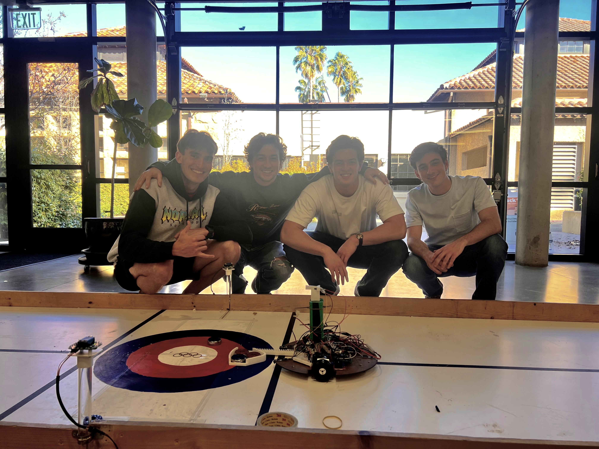
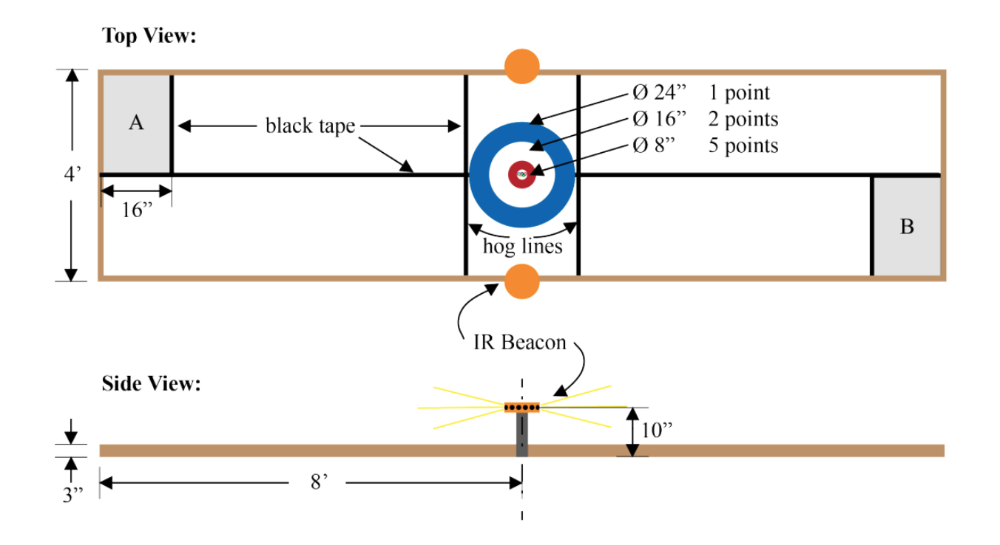
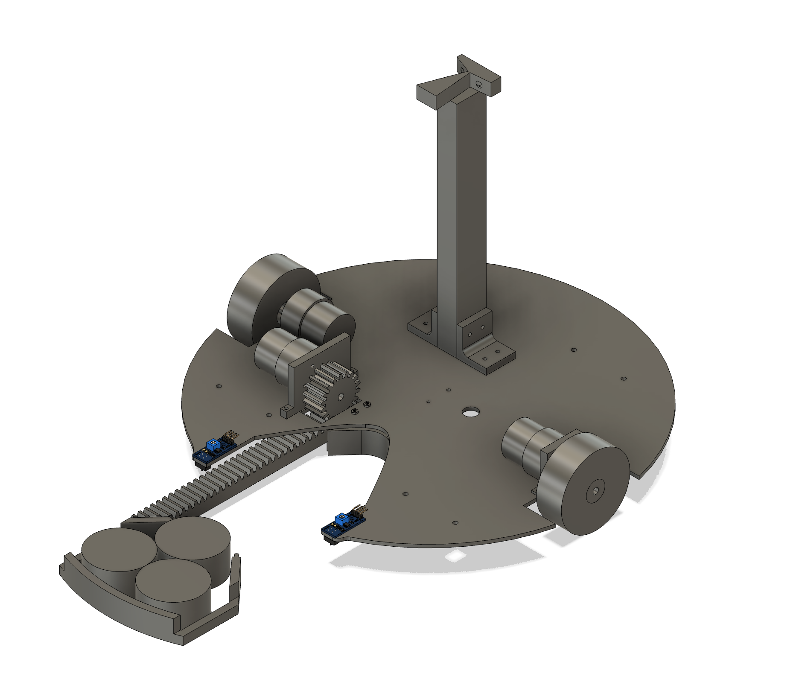
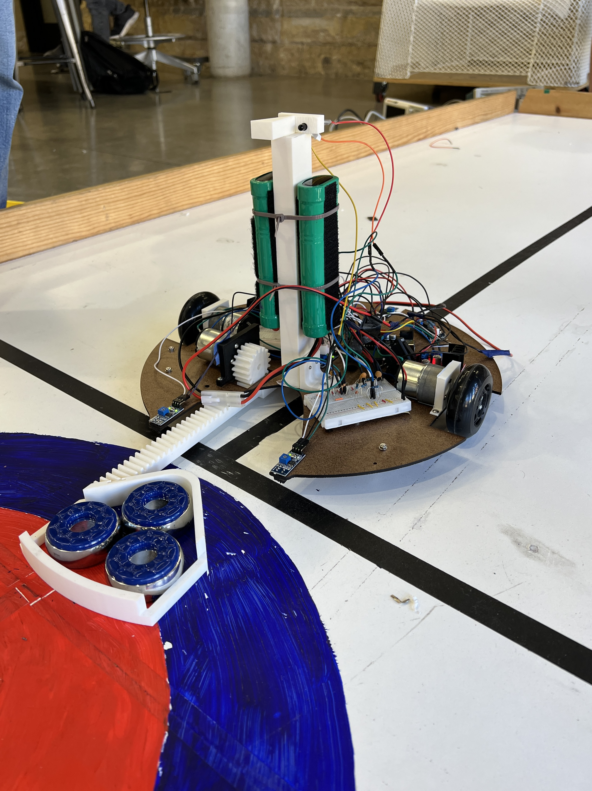
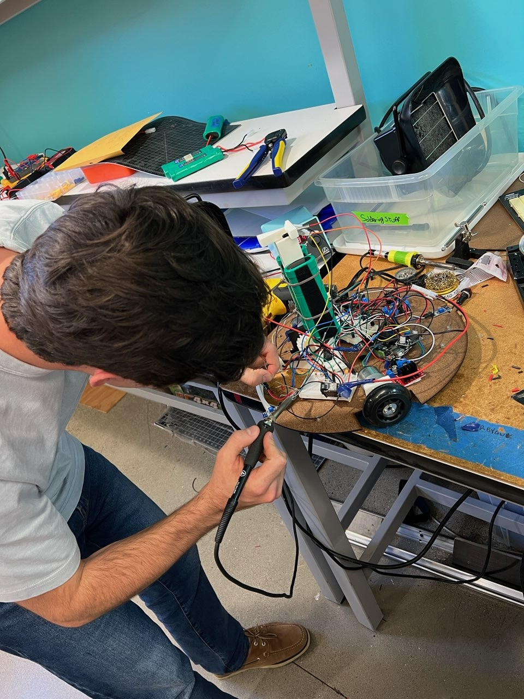

Canada Curling Team

Project Overview
This project, set out by the 2026 ME210 teaching team, was to build a fully autonomous curling robot — a DROID that starts in a random orientation, finds its way down the curling sheet, launches pucks toward the house, and does all of this without embarrassing itself in front of family, friends, and the teaching staff.
The challenge combined navigation, sensing, actuation, and strategy under tight constraints: a small footprint, full autonomy, a limited budget, and the requirement to "beat the brick." Over a 4-week sprint, our robot evolved from ambitious ideas into a working system with a clear strategy, integrated sensing, and a repeatable puck-shooting mechanism.
Rules & Requirements
- Fully autonomous — no human interaction except legal reloading between runs
- Start in a randomized orientation with three pucks loaded
- Max footprint 13×13 in starting, 20×20 in deployed; max height 12 in
- Front of starting footprint cannot cross the hog line
- Arduino Uno control, untethered battery power, external e-stop, in-line fuse
- Total material cost under $200
- Minimum: score ≥ 3 points in 2 minutes ("beat the brick")
Design Strategy
From day one, our goal was simple: beat the brick. We committed to a minimal, reliable strategy built around the curling sheet's center line and an IR beacon at the house. Rather than over-engineer, we designed for exactly the task at hand.
- Detect the IR beacon and orient toward the house
- Drive forward to fully exit the starting zone
- Turn 90° and sweep laterally to find the center tape line
- Align parallel to the line and follow it to the hog line
- Stop and extend the puck arm to score

Because the starting zone was itself bounded by black tape, we had to exit completely before activating any tape sensors — otherwise the robot might lock onto the wrong line. IR beacon detection solved the orientation problem first, then tape sensing took over for the rest of the run.
Mechanical Design
The mechanical design prioritized speed of fabrication and ease of integration. The chassis was laser-cut from Duron — lightweight, stiff, and available in the lab — with all major components slotted and mounted to a single flat base.

The CAD model guided our fabrication from the start. Every mounting hole, motor pocket, and sensor slot was laid out before cutting — which meant assembly was mostly mechanical rather than improvisational.
Drivetrain
Two DC motors in a differential drive configuration, stabilized by a pair of ball-transfer rollers. A software trim constant of 0.8 on the right motor corrected a physical speed mismatch — no feedback control needed.
IR Tower
A 3D-printed PLA tower elevated two phototransistors above the chassis, with a physical barrier between them to isolate left and right beacon signals. Pockets in the second iteration locked the sensors in place, preventing drift during operation. The tower also served as the battery mount, keeping the center of mass centered.
Puck Dispenser — Rack & Pinion
The scoring mechanism is a 3D-printed rack-and-pinion: a toothed gear (pinion) mounted on a DC motor meshes with a straight toothed rail (rack) that slides linearly outward. When the motor spins, the pinion rotates and drives the rack — and the puck cradle attached to it — forward in a straight line. It's a simple way to convert rotational motor output into precise linear extension with no linkages or cams needed.
On reaching the hog line, the arm extended forward over 2000 ms and pushed all three pucks into the scoring zone in a single stroke. PLA was fast to fabricate and easy to iterate: we revised the rack length and cradle geometry twice before locking in a version that cleared the hog line cleanly every time.

Electrical Design
All sensing, motor control, and power distribution ran through a single breadboard mounted to the chassis — keeping wiring short, organized, and debuggable.

Power
Provided battery packs with an in-line fuse and an external emergency stop switch wired in series with the main rail.
DC Motor Drivers
Three dedicated H-bridge modules gave independent bidirectional PWM control for each motor. Left/right drive motors used pins 8, 5, 9 and 6, 7, 10; the rack motor used pins 12, 13, 11.
Tape Sensors
Four reflectance sensors: center mid on pin 2, rear on A5, and two front hog-line sensors on pins 3 and 4. Each outputs HIGH over black tape, LOW otherwise. Polled directly in the FSM loop — no interrupts needed at the robot's speed.
IR Phototransistors
Two phototransistors (LTR-3208) on pins A0 and A1. The ADC prescaler was reduced from divide-by-128 to divide-by-16 via the ADCSRA register, raising the sampling rate to support the Goertzel frequency detection algorithm.

Software & Finite State Machine
The robot ran an 8-state FSM in the Arduino main loop. Each state was self-contained with defined entry conditions, actions, and exit transitions — easy to test in isolation and modify without touching the rest.
Goertzel Algorithm for IR Detection
Rather than raw thresholding, we implemented a Goertzel algorithm — an efficient single-frequency DFT — to detect the specific 909 Hz beacon signal and reject ambient IR noise. 50 samples per sensor at ~9090 samples/sec, DC offset removed, power computed at bin k=5. Threshold: 1000.0.
Full Source Code
The complete Arduino sketch uploaded to the robot:
Final.ino — view source
Results
The robot reliably started in a random orientation, found the IR beacon, navigated to the center line, advanced to the hog line, and delivered all three pucks in a single consistent run. The project demonstrated the value of a simple strategy executed well.
Bill of Materials
| Component | Purpose |
|---|---|
| 18" × 24" Duron board | Laser-cut chassis |
| 3× DC motors | 2 drive, 1 rack-and-pinion actuator |
| 4× reflectance tape sensors | Line detection & hog-line stopping |
| 3× H-bridge motor driver modules | Independent motor control |
| 2× phototransistors | IR beacon detection |
| 3D-printed PLA components | IR tower, rack and pinion |
| 2× ball-transfer rollers | Chassis stabilization |
| Arduino Uno | Main microcontroller |
| Battery packs, fuse, e-stop switch | Power & safety |
Conclusion
By committing to a clear, minimal strategy early, we avoided the scope creep that derails many ME210 projects. IR beacon detection to orient, tape sensing to navigate, rack-and-pinion to score — every system existed to serve one goal.
The most valuable lesson: modular design makes integration easy. Each subsystem was debuggable in isolation, and assembly at the end was straightforward. If we continued, we'd replace the timed exit and turn behaviors with sensor-based equivalents for better robustness. But for ME210 — the robot did its job, reliably and well. Sometimes the best engineering decision is knowing when you're done.